Chapter 5 Markov Chain Monte Carlo
Markov Chain Monte Carlo (MCMC) is a class of algorithms that produce samples from a probability distribution. These methods combine the idea of rejection sampling with the theory of Markov chains. Before we set out the theory of Markov chains, we’ll go through an example to show how MCMC works.
Example 5.1 (Adapted from Statistical Rethinking 9) Consider an eccentric King whose kingdom consists of a ring of 10 islands. Directly north is island one, the smallest island. Going clockwise around the archipelago, next is island two, which is twice the size of island one, then island three, which is three times as large as island one. Finally, island 10 is next to island one and ten times as large.
The King wanted to visit all of his islands, but spending time on each one according to its size. That is he should spend the most time on island ten and the least on island one. Being climate conscious, he also decided that flying from one side of the archipelago to the other was not allowed. Instead, he would only sail from one island to either of its neighbors. So from island one, he could reach islands two and ten.
He decided to travel according to these rules:
At the end of each week, he decides to stay on the same island or move to a neighboring island according to a coin toss. If it’s heads he proposes moving clockwise, and tails anti-clockwise. The island he is considering moving to is called the proposal island.
To decide if he is going to move to the proposal island, the King counts out a number of shells equal to the number of size of the island. So if island five is the proposal island, he counts out five shells. He then counts out a number of stones equal to the size of the current island.
If the number of seashells is greater than the number of stones, he moves to the proposed island. If the number of seashells is less than the number of stones, he takes a different strategy. He discards the number of stones equal to the number of seashells. So if there are six stones and five seashells, he ends up with 6-5=1 stones. He then places the stones and seashells into a bag and pulls one at random. If he picks a seashell, he moves to the proposed island, otherwise if he picks a stone, he stays put.
This is a complex way of moving around, but it produces the required result; the time he spends on each island is proportionate to the size of the island. The code below shows an example of this over 10,000 weeks.
weeks <- 10000
island <- numeric(weeks)
current <- 10
for(i in 1:weeks){
## record current position
island[i] <- current
#Flip a coin to move to a propose a new island
proposed <- current + sample(c(1, -1), size = 1)
#Ensure he loops round the island
if(proposed < 1)
proposed <- 10
if(proposed > 10)
proposed <- 1
#Decide to move
p <- proposed/current
u <- runif(1)
if(u < p)
current <- proposed
}
#Plot results
plot(island, type = 'l', xlab = "Week", ylab = "Island")

We can recognise several different statistical principles in this example. The King decides to move islands dependent on where he is currently, not based on where he has been previously (Markov property). He proposes an island to move to and accepts or rejects this decision based on some distribution (rejection principle). We are now going to describe some of the properties of Markov chains, including the Markov property.
5.1 Properties of Markov Chains
Definition 5.1 A sequence of random variables \(Y = (Y_n)_{n \in \mathbb{N}_0}\) is a Markov chain if \(\mathbb{P}(Y_{n+1} \in \cdot \mid Y_{n}, \ldots, Y_0) = \mathbb{P}(Y_{n+1} \in \cdot \mid Y_{n})\) a.s. That is, the distribution of the next state \(Y_{n+1}\) conditional on its entire past only depends on the current state \(Y_n\).
Definition 5.2 A Markov chain is called homogeneous if for any \(n,m \in \mathbb{N}_0\) it holds that \(\mathbb{P}(Y_{n+ m} \in \cdot \mid Y_n) = \mathbb{P}(Y_{m} \in \cdot \mid Y_0)\). That is, transition probabilities only depend on the time differences.
From here on, we will only deal with homogeneous Markov chains and will therefore synonymously use the terms Markov chain and homogeneous Markov chain.
Definition 5.3 If for some finite set \(S = \{i_1,\ldots,i_N\}\) we have \(\mathbb{P}(Y_n \in S) = 1\) for all \(n \in \mathbb{N}_0\), we call \(Y\) a finite Markov chain and \(S\) its state space.
By relabelling, we may always assume wlog that \(S = \{1,\ldots,N\}\) for a finite Markov chain with \(N\) states.
Definition 5.4 For a finite Markov chain the probability of transitioning from state \(i\) to state \(j\) in a Markov chain is given by \(p_{ij}\). The transition matrix for a Markov chain with \(N\) states is the \(N \times N\) matrix \(P = (p_{ij})_{i,j=1,\ldots,N}\), where the \(\{i, j\}^{th}\) entry \(p_{ij}\) is the probability of moving from state \(i\) to state \(j\), i.e., \(\mathbb{P}(Y_{n+1} = j \mid Y_n = i) = \mathbb{P}(Y_{1} = j \mid Y_0 = i).\)
These properties make Markov chains nice to work with. Two other important definitions are:
Definition 5.5 For a finite Markov chain, the period of a state \(i\) is given by \(d_i = \textrm{gcd}\{n > 0; P^n(i,i) > 0 \}\). A state is aperiodic if \(d_i = 1\). An aperiodic chain is a chain where all states are aperiodic.
Definition 5.6 A finite Markov chain is irreducible if for any \(i,j \in S\) there exists an \(n \in \mathbb{N}_0\) such that \(\mathbb{P} (Y_n = j \mid Y_0 = i) > 0\). In other words, it is possible to move from any state to any other state in a finite number of steps.
We can use these definitions to start working with distributions. Suppose, the state we start at is drawn from some distribution \(Y_0 \sim q\). Then the distributions of the second state \(Y_1\) depends on the distribution of \(Y_0\) and the transition probabilities \[ \mathbb{P}(Y_1 = j) = \sum_{i=1}^N q_ip_{ij}. \] If we denote the distribution of \(Y_1 \sim {q}^{(1)}\), then we can write it in terms of the transition matrix \({q}^{(1)} = {q}P\). Now suppose we would like to determine the distribution of \(Y_2 \sim {q}^{(2)}\); thanks to the Markov property, this is the distribution for \(Y_1\) multiplied by the transition matrix from the right, so \(Y_2 \sim qP^2\). Inductively, \(Y_k \sim qP^{k}\). To use Markov chains to sample from distributions, we need to identify the eigenvalues of the transition matrix.
Definition 5.7 Suppose that there exists a probability vector \(\pi\) (that is, \(\pi_i \geq 0\) and \(\sum_{i=1}^n \pi(i) = 1\)) that is a left-eigenvector with eigenvalue \(1\) for the transition matrix \(P\), i.e., \[ \pi P = \pi. \] Then \(\pi\) is called the stationary distribution of the Markov chain corresponding to \(P\).
The terminology arises from the fact that if the Markov chain is started in \(\pi\), the marginal distributions \(\mathbb{P}_{Y_n}\) remain unchanged (they are invariant under time translation), since then \[q^{(n)} = \pi P^n = (\pi P)P^{n-1} = \pi P^{n-1} = \cdots = \pi.\] A basic fact is the following.
Theorem 5.1 If a finite Markov chain is irreducible, a unique stationary distribution exists.
Definition 5.8 A finite Markov chain is called ergodic if for all \(i,j \in S\) it holds that \[\lim_{n \to \infty} \mathbb{P}(Y_n = i \mid Y_0 = j) = \pi_i.\] Equivalently, for any initial distribution \(q\), \[\lim_{n \to \infty} qP^n = \pi.\]
Irreducibility is not sufficient to guarantee ergodicity of a Markov chain: take a two state Markov chain with transition matrix
\[P = \begin{pmatrix} 0 & 1\\ 1 & 0 \end{pmatrix},\]
that is the chain deterministically moves from state \(1\) to \(2\) and vice versa. Then \(Y\) is clearly irreducible and \(\pi = (1/2,1/2)\) is its unique stationary distribution since
\[(1/2, 1/2) = \begin{pmatrix} 0 & 1\\ 1 & 0 \end{pmatrix} = (1/2,1/2).\]
However, if started in \(1\), the chain does not converge, since then \(\mathbb{P}(Y_{2n} = 1) = 1 \neq 1/2 = \pi(1).\) The problem is the lack of aperiodicity, since by its very nature, \(d_1 = d_2 = 2 > 1\). In fact, aperiodicity is the missing piece to guarantee convergence to the stationary distribution, irrespectively of the initialisation:
Theorem 5.2 A finite Markov chain is ergodic if, and only if, it is irreducible and aperiodic.
This important concept underpins MCMC methods. It says that no matter where we start our ergodic chain, we’ll eventually end up sampling states according to the target distribution \(\pi\). It make take a long time to reach the stationary distribution, but it will eventually get there.
In order to check whether our finite Markov chain will converge to a stationary distribution, we therefore need to check:
the Markov chain is irreducible, and
the Markov chain is aperiodic.
When we want to sample from a prescribed distribution \(\pi\) we additionally need to check the following condition for a finite Markov chain satisfying the above:
- \(\pi\) is stationary for the Markov chain.
Example 5.2 In Example 5.1, the King wanted to visit the islands according to how large they are. We can think of the islands as the states and the stationary distribution as \(p(Y = i) \propto i\). The eccentric method the King used allowed him to construct a transition matrix for an aperiodic Markov chain. He also never visited islands regularly using this method.
When designing a Markov chain, it is usually straightforward to design one that meets conditions one and two. Constructing a chain with prescribed stationary distribution \(\pi\) is more difficult, but a detailed balance criterion can help with this.
Definition 5.9 The Markov chain with transition matrix \(P\) satisfies the detailed balance equation with respect to the distribution \(\pi\) if \[ \pi_i p_{ij} = \pi_j p_{ji}. \]
Theorem 5.3 (Detailed Balance) Let \(P\) be a transition matrix that satisfies detailed balance with respect to the distribution \(\pi\). Then \(\pi P = \pi\).
Proof. The \(j^{th}\) entry of \(\pi P\) is \[\begin{align*} \sum_{i} \pi_i p_{ij} & = \sum_{i} \pi_j p_{ji} \quad \textrm{(detailed balance)} \\ & = \pi_j \sum_{i} p_{ji} \\ & = \pi_j.\qquad \textrm{(probaility sums to 1)} \end{align*}\] Hence \(\pi P = \pi\).
So far, we have shown that we can use finite state Markov chain theory to simulate from a discrete probability distribution \(\pi\) by running a Markov chain with \(\pi\) as a stationary distribution for a sufficently long time. However, for discrete distributions this is of course overkill, since we can easily sample from such distributions via the inverse transformation method. All of the above concepts translate however in a natural way to Markov chains with more complicated state spaces, and we will just briefly comment on this now:
The generalisation of the transition matrix is a Markov kernel \(P \colon S \times \mathcal{B}(S) \to [0,1]\) on a general Borel state space \((S,\mathcal{B}(S))\), which satisfies the following properties:
- \(\forall x \in S: \quad P(x, \cdot) \text{ is a probability measure}\),
- \(\forall A \in \mathcal{B}(S): \quad x \mapsto P(x, A) \text{ is measurable.}\)
For two Markov kernels \(P,Q\) we let \[Q\circ P(x,A) = \int_{S} P(x, dy ) Q(y,A), \quad (x,A) \in S \times \mathcal{B}(S),\] and for a probability measure \(q\) on \(S\) let \(qP\) be the probability measure \[qP(A) = \int_S q(dx) P(x,A), \quad A \in \mathcal{B}(S).\]
If \(S\) is nice enough, the Markov property is equivalent to demanding that for some Markov kernel \(P\) we have \[\forall A \in \mathcal{B}(S): \quad \mathbb{P}(Y_{n+1} \in A \mid Y_n, \ldots, Y_0) = P(Y_n, A). \] Then, if we define iteratively the Markov kernels \(P^1 = P\) and \[P^{n+1}(x,A) = P \circ P^n(x,A) = \int_{S} P^n(x, dy) P(y, A), \quad (x,A) \in S \times \mathcal{B}(S),\] we have the Chapman–Kolmogorov equation \[ P^{n+m} = P^n \circ P^m \] and \[ \mathbb{P}(Y_1 \in A_1, \ldots, Y_n \in A_n \mid Y_0 = x) = \int_S P(x, dy_0) \int_{A_1 \times \cdots \times A_n} \prod_{i=1}^n P(y_{i-1}, dy_i). \]
Example 5.3 Let \(X= (X_n)_{n\in \mathbb{N}}\) be an i.i.d. sequence of \(\mathbb{R}^d\)-valued random variables with distribution \(\mathbb{P}_{X_1} = \eta\) and \(X_0 \sim \mu\) be independent of \((X_n)_{n\in \mathbb{N}}\). A random walk \(Y\) associated to the sequence of innovations \(X\) and initialistion \(X_0\) is defined by \(Y_0 = X_0\) and \[Y_n = X_0 + \sum_{i=1}^n X_i, \quad n \in \mathbb{N},\] which can be equivalently characterised by the recursive relation \[Y_{n+1} = Y_n + X_{n+1}, \quad n \in \mathbb{N}_0. \] This immediately yields the Markov property \[\mathbb{P}(Y_{n+1} \in A \mid Y_0,\ldots,Y_n) = \mathbb{P}(Y_{n+1} \in A \mid Y_n) \] and defining for \(A -x := \{z = y -x: y \in A\}\) the Markov kernel \[P(x,A) = \mathbb{P}(X_1 \in A - x) = \eta(A -x) \] we obtain \[\mathbb{P}(Y_{n+1} \in A \mid Y_n) = \mathbb{P}(Y_n + X_{n+1} \in A \mid Y_n) = \mathbb{P}(X_{n+1} \in A - Y_n \mid Y_n) = P(Y_n, A). \]
Example 5.4 Let \((\xi_n)_{n \in \mathbb{N}} \overset{\mathrm{i.i.d}}{\sim} N(0, I)\) and \(V \colon \mathbb{R}^d \to \mathbb{R}\) be a continuously differentiable function. Then, for \(Y_0 \sim \mu\) independent of \((\xi_n)_{n \in \mathbb{N}}\) and a step size \(h > 0\) we define recursively \[\begin{align*} Y_{n+1} &= Y_n - h \nabla V(Y_n) + \sqrt{2h} \xi_{n+1}, \quad n \in \mathbb{N}_0. \end{align*}\] This is very reminiscent of a gradient descent algorithm with an additional stochastic perturbation that is distributed according to \(N(0,2hI)\) and therefore centered and rather small for small step sizes \(h\). We call this Markov chain a Langevin Markov Chain with step size \(h\) and potential \(V\). Because the innovations are i.i.d. the chain is clearly Markov and since \(Y_{n +1} \mid Y_n \sim N(Y_n - h \nabla V(Y_n), 2h I )\) its Markov kernel is given by \[P(x,dy) = \phi_{x - h\nabla V(x), 2h I }(y) \, dy, \] where \(\phi_{\mu,\Sigma}\) denotes the pdf of a normal random vector with mean \(\mu\) and covariance matrix \(\Sigma\).
Analogously to the finite state space case we then call a distribution \(\pi\) on \(S\) a stationary distribution if \[\pi P = \pi \qquad (\iff \forall A \in \mathcal{B}(S): \int \pi(dx)\, P(x,A) = \pi(A)),\] and thus iteratively \[\mathbb{P}(Y_n \in \cdot \mid Y_0 \sim \pi) = \pi.\]
Definition 5.10 A Markov chain \(Y\) with unique stationary distribution \(\pi\) is called ergodic if \[\forall x \in S: \quad \lim_{n \to \infty} \lVert P^n(x,\cdot) - \pi \rVert_{\mathrm{TV}} = 0,\] where we recall that for two probability measures \(\mu,\nu\) on \(S\) their total variation distance is given by \[\lVert \mu - \nu \rVert_{\mathrm{TV}} = \sup_{A \in \mathcal{B}(S)} \lvert \mu(A) - \nu(A) \rvert.\]
Example 5.5 Let’s return to the Langevin Markov chain from above, where \[Y_{n+1} = Y_n - h\nabla V(Y_n) + \sqrt{2h} \xi_{n+1}, \quad (\xi_n)_{n\in \mathbb{N}} \overset{\mathrm{i.i.d.}}{\sim} N(0,I). \] Given appropriate conditions on \(h\) the potential \(V\), which are similar to those that guarantee convergence of a gradient descent algorithm to obtain minimisers of \(V\) (say, strong convexity and Lipschitz-continuity), the Markov chain is ergodic with invariant distribution \(\pi^h\). Here, for sufficiently small step sizes \(h\) we have \(\pi^h \approx \pi\), where \(\pi\) has density proportional to \[\pi(y) \propto \mathrm{e}^{-V(y)}, \quad y \in \mathbb{R}^d. \] This is our first example of an MCMC algorithm for the target density \(\pi\) (called the Langevin Monte-Carlo algorithm) and is especially relevant in high dimensions, where the normalising constant \(\int_{\mathbb{R}^d} \mathrm{e}^{-V(y)}\, dy\) is very expensive to calculate numerically, therefore making rejection algorithms infeasible.
Determining whether a general Markov chain is ergodic is a much more demanding task than in the finite state space situation. For a given Markov kernel, verification is based on checking extensions of the notions of irreducibility, aperiodicity and recurrence for countable Markov chains, where the latter property encodes the idea that return times to any state \(i\) should be finite almost surely. The main challenge for general state spaces is that there need not be any states \(x \in S\) such that \(P(y,\{x\}) > 0\) for any \(y \in S\) (e.g. when the transition probabilities are absolutely continuous). Instead of going into technical details, we only cite a quantitative result from (Hairer and Mattingly 2011) that provides exponentially fast convergence to the invariant distribution given explicit criteria on \(P\).
Theorem 5.4 Suppose that \(Y\) satisfies the following conditions:
Drift condition: There exists a penalty function \(V\colon S \to [1,\infty)\) and constants \(K \geq 0, \gamma \in (0,1)\) such that \[\forall x \in S: \underbrace{\int_S V(y)\, P(x,dy)}_{= \mathbb{E}[V(Y_1) \mid Y_0 = x]} \leq \gamma V(x) + K. \]
Minorisation condition: There exists a constant \(\alpha \in (0,1)\) and a probability measure \(\nu\) such that \[\forall A \in \mathcal{B}(S): \quad \inf_{x \in C} P(x,A) \geq \alpha \nu(A)\] where \(C = \{x \in S: V(x) \leq R\}\) for some \(R > 2K/(1-\gamma).\)
Then, \(Y\) has a unique stationary distribution \(\pi\) and there exist explicit constants \(D > 0, \kappa \in (0,1)\) such that \[\lVert P^n(x,\cdot) - \pi \rVert_{\mathrm{TV}} \leq DV(x) \kappa^n, \quad x \in S.\]
As a corollary we obtain the following result, which is mostly useful for bounded state spaces.
Corollary 5.1 Suppose that for some probability measure \(\nu\) and \(\alpha \in (0,1)\) the following Doeblin minorisation criterion holds: \[\forall x \in S, A \in \mathcal{B}(S): \quad P(x,A) \geq \alpha \nu(A). \] Then, there exist constants \(D > 0,\kappa \in (0,1)\) such that \[\sup_{x \in S} \lVert P^n(x,\cdot) - \pi \rVert_{\mathrm{TV}} \leq D\kappa^n.\]
Proof. Choose \(\gamma = 1/2, V \equiv 1, K = 1/2\). Then, for arbitrary \(R > 2 = 2K/(1-\gamma)\), we have \(C = \{x \in S: V(x) \leq R\} = S\) and hence by assumption
\[\inf_{x \in C} P(x,A) = \inf_{x \in S} P(x,A) \geq \alpha \nu.\]
Moreover, for any \(x \in S\) by construction.
\[\mathbb{E}[V(Y_1) \mid Y_0 = x] = 1 = \gamma V(x) +K.\]
Consequently, the drift and minorisation criteria from the previous theorem are satisfied, yielding the assertion.
Remark. It can be shown that \(\kappa = 1 - \alpha, D=1\), see Theorem 16.0.2 in (Meyn and Tweedie 2009).
Such results provide the foundation theory for MCMC and allow us to sample approximatively from a posterior distribution \(\pi\) for an appropriately constructed chain. What it doesn’t tell us is how to design the Markov chain, and that is what the next sections deal with. The following extension of the detailed balance condition will be helpful for this purpose:
Theorem 5.5 (Detailed Balance) Let \(P\) be a Markov kernel and \(\pi\) be a distribution on the state space \(S\). If \(\pi\) and \(P\) satisfy detailed balance in the sense \[\begin{align*} &\forall x,y \in S: \pi(dx)\, P(x,dy) = \pi(dy)\, P(y,dx) \\ &(\text{i.e.,} \forall B \in \mathcal{B}(S) \otimes \mathcal{B}(S): \int \mathbf{1}_B(x,y)\, \pi(dx) \, P(x,dy) = \int \mathbf{1}_B(x,y)\, \pi(dy) \, P(y,dx) \end{align*}\] then \(\pi P = \pi\), i.e., \(\pi\) is stationary.
Proof. Using detailed balance and Fubini, we find for any \(A \in \mathcal{B}(S)\), \[\begin{align*} \pi P(A) &= \int_{x \in S} \int_{y \in A} \pi(dx)\, P(x,dy) =\int_{x \in S} \int_{y \in A} \pi(dy) \, P(y,dx)\\ &= \int_{y \in A} \underbrace{\Big(\int_{x \in S} P(y,dx) \Big)}_{= \mathbb{P}(Y_1 \in S \mid Y_0 = y) = 1} \, \pi(dy) = \pi(A). \end{align*}\]
5.2 Metropolis–Hastings
We’re now going to look at MCMC algorithms. The first algorithm we are going to look at is the Metropolis–Hastings algorithm. This is a useful algorithm if we cannot sample directly from the posterior distribution and if the conditional distributions do not have a closed form. The Metropolis–Hastings algorithm is like the island example we saw earlier. At each iteration, we propose a new sample and then accept or reject it based on the likelihood function, the prior and how likely we are to propose this new sample given the current one.
Suppose we want to sample from the posterior distribution \(\pi(\theta \mid \boldsymbol{y})\). The Metropolis–Hastings works as follows:
Set the initial value \(\theta^{(0)}\).
Set \(i = 1\)
Propose a new value of \(\theta'\) from some distribution \(q(\cdot \mid \theta)\) for \(\theta = \theta^{(i-1)}\)
Accept \(\theta' = \theta^{(i)}\) with probability \[ p_{\textrm{acc}} = p_{\textrm{acc}}(\theta,\theta^\prime) = \min\left\{\frac{\pi(\theta' \mid \boldsymbol{y})}{\pi(\theta \mid \boldsymbol{y})}\frac{q(\theta \mid \theta')}{q(\theta' \mid \theta)}, 1\right\}, \] otherwise set \(\theta^{(i)} = \theta\) (in the acceptance probability use the convention \(x/0 = +\infty\) for any \(x\))
Set \(i = i+1\) and repeat steps 3 to 4 for \(i = 2, \ldots, n-1\).
This yields a Markov chain with transition kernel given by \[P(\theta,d\theta^\prime) = p_{\textrm{acc}}(\theta,\theta^\prime) q(\theta^\prime \mid \theta)\, d\theta^\prime + \delta_{\theta}(d \theta^\prime) \int (1- p_{\mathrm{acc}}(\theta,z)) q(z \mid \theta) \, dz. \] Let us also note that the specific choice of a posterior as target sampling density is just for the sake of exposition in this chapter. The algorithm can be applied to any target distribution \(\pi\). There are two parts to the acceptance probability in step 4. The first is the posterior ratio, similar to saying the likelihood of \(\theta'\) given the observed data over the likelihood of \(\theta\) given the data. The second is the proposal ratio. It is similar to saying the likelihood of proposing \(\theta\) given the current value \(\theta'\), over the likelihood of proposing \(\theta'\) given the current value \(\theta\).
In practice, we don’t need to evaluate the full posterior distribution. Recall \[ \pi(\theta \mid \boldsymbol{y}) = \frac{\pi(\boldsymbol{y} \mid \theta) \pi(\theta)}{\pi(y)} \] As the the denominator doesn’t depend on \(\theta\), it cancels in the ratio. The ratio becomes \[ \frac{\pi(\theta' \mid \boldsymbol{y})}{\pi(\theta \mid \boldsymbol{y})} = \frac{\pi(\boldsymbol{y} \mid \theta') \pi(\theta')}{\pi(\boldsymbol{y} \mid \theta) \pi(\theta)}. \] This is the likelihood ratio multiplied by the prior ratio.
Theorem 5.6 The Markov chain generated by the Metropolis–Hastings algorithm satisfies detailed balance with respect to the posterior distribution and the posterior is stationary.
Proof. For detailed balance we need to show that \[\pi(\theta \mid \boldsymbol{y}) P(\theta, d\theta^\prime) \, d\theta = \pi(\theta^\prime) P(\theta^\prime, d\theta) \, d\theta^\prime, \] and stationarity will follow from that by Theorem 5.5. The case \(\theta = \theta^\prime\) is trivial, so let us consider the case \(\theta \neq \theta^\prime\). We then have \[\begin{align*} \frac{P(\theta,d\theta^\prime)}{d\theta^\prime} &= q(\theta' \mid \theta)p_{acc}(\theta,\theta^\prime)\\ &= q(\theta' \mid \theta)\min\left\{\frac{\pi(\theta' \mid \boldsymbol{y})}{\pi(\theta \mid \boldsymbol{y})}\frac{q(\theta \mid \theta')}{q(\theta' \mid \theta)}, \, 1\right\} \\ & = \min\left\{\frac{\pi(\theta' \mid \boldsymbol{y})}{\pi(\theta \mid \boldsymbol{y})}q(\theta \mid \theta'),\, q(\theta' \mid \theta)\right\}, \end{align*}\] which shows that the lhs of the desired detailed balance equation is given by \[ \pi(\theta \mid \boldsymbol{y})P(\theta, d\theta^\prime) d\theta = \min\{\pi(\theta' \mid \boldsymbol{y})q(\theta \mid \theta'),\, \pi(\theta \mid \boldsymbol{y})q(\theta' \mid \theta)\} \, d\theta^\prime\, d\theta. \] By symmetric arguments, it follows that the rhs is given by \[ \pi(\theta^\prime \mid \boldsymbol{y})P(\theta^\prime, d\theta) \, d\theta^\prime = \min\{\pi(\theta \mid \boldsymbol{y})q(\theta^\prime \mid \theta),\, \pi(\theta^\prime \mid \boldsymbol{y})q(\theta \mid \theta')\} \, d\theta\, d\theta^\prime, \] which establishes equality of the lhs and rhs, whence detailed balance for \(\theta \neq \theta^\prime\).
The speed of convergence of the Metropolis–Hastings algorithm and related MCMC algorithms has been a central research questions for the past 30 years or so, as this is fundamental to evaluate their sampling efficiency. Here, we focus on a simple case, where sampling works particularly well, and which sometimes can be applied to target posteriors \(\pi(\cdot \mid \boldsymbol{y}\) that are uniformly bounded away from zero on its bounded support.
Theorem 5.7 Suppose that \(\pi(\theta \mid \boldsymbol{y})\) is a posterior with support \(S\) and that there exist finite constants \(m,M > 0\) we have \(m \leq \inf_{\theta \in S} \pi(\theta \mid \boldsymbol{y}) \leq \sup_{\theta \in S} \pi(\theta \mid \boldsymbol{y}) \leq M\). Let also \(q\) be a symmetric proposal density on \(S\) (that is, \(q(\theta^\prime \mid \theta) = q(\theta \mid \theta^\prime)\) for all \(\theta,\theta^\prime \in S\)) such that \(q(\theta^\prime \mid \theta) \geq \rho\nu(\theta^\prime)\) for all \(\theta \in S\), some \(\rho \in (0,1)\) and some probability density \(\nu\) on \(S\). Then, for the Metropolis–Hastings chain it holds that \[\sup_{x \in S} \lVert P^n(x,\cdot) - \pi(\cdot \mid \boldsymbol{y}) \rVert_{\mathrm{TV}} \leq \Big(1 - \frac{\rho m}{M}\Big)^n.\]
Proof. By symmetry of the proposal density and the upper and lower bounds on the posterior, it follows that
\[\begin{align*}
p_{\mathrm{acc}}(\theta,\theta^\prime) = \min\Big\{\frac{\pi(\theta^\prime \mid \boldsymbol{y})}{\pi(\theta \mid \boldsymbol{y})}, 1 \Big\} \geq \frac{m}{M}.
\end{align*}\]
Therefore, for any \(A \in \mathcal{B}(S)\) it follows that
\[\begin{align*}
\forall \theta \in S: \quad P(\theta,A) &= \int_A p_{\textrm{acc}}(\theta,\theta^\prime) q(\theta^\prime \mid \theta)\, d\theta^\prime + \delta_{\theta}(A) \int (1- p_{\mathrm{acc}}(\theta,z)) q(z \mid \theta) \, dz \\
&\geq \int_A p_{\textrm{acc}}(\theta,\theta^\prime) q(\theta^\prime \mid \theta)\, d\theta^\prime \\
&\geq \frac{m\rho}{M} \int_A \nu(\theta^\prime) \,d\theta^\prime.
\end{align*}\]
Since the rhs is independent of \(\theta\), the Doeblin minorisation criterion is fulfilled with \(\alpha = \rho m/M\) and Corollary 5.1 yields
\[\sup_{x \in S} \lVert P^n(x,\cdot) - \pi(\cdot \mid \boldsymbol{y}) \rVert_{\mathrm{TV}} \leq (1-\alpha)^n = \Big(1 - \frac{\rho m}{M}\Big)^n.\]
Example 5.6 A counter monitors the time until atoms decays. It collects the data \(X_1, \ldots, X_N\) and we assume \(X_i \sim \hbox{Exp}(\lambda)\). The time until these atom decay is long, certainly more than 1 second (or minute, hour etc.), so we assume \(\lambda \sim \hbox{Beta}(\alpha, \beta)\).
The prior distribution is given by \[ \pi(\lambda \mid \boldsymbol{x}) \propto \lambda^{N + \alpha - 1} (1 - \lambda)^{\beta - 1}\exp\left(-\lambda \sum x_i\right) \] This doesn’t have a closed form, so we need to use a Metropolis–Hastings algorithm to generate samples from this distribution. A suitable algorithm is
- Decide on an starting value the Markov chain and denote it by \(\lambda^{(0)}\). Set \(i = 0\).
- Propose a new value for the parameter and denote it \(\lambda'\). In this example, we are going to propose values using a random walk method where \(\lambda' \sim N(\lambda^{(i)}, \sigma^2)\).
- Accept \(\lambda'\) as the value \(\lambda^{(i+1)}\) with probability \(p_{\textrm{acc}}\). Otherwise reject this value and set \(\lambda^{(i+1)} = \lambda^{(i)}\).
- Set \(i = i + 1\).
- Repeat steps 2, 3, 4, for \(i = 1, \ldots, n-1\).
The value \(p_{\textrm{acc}}\) is given by \[ p_{\textrm{acc}} = \min \left\{1, \, \frac{\lambda'^{N + \alpha - 1} (1 - \lambda')^{\beta - 1}\exp\left(-\lambda' \sum x_i\right)}{\lambda^{N + \alpha - 1} (1 - \lambda)^{\beta - 1}\exp\left(-\lambda \sum x_i\right)}\right\} \\ = \min \left\{1, \, \left(\frac{\lambda'}{\lambda}\right)^{N + \alpha - 1} \left(\frac{1-\lambda'}{1-\lambda}\right)^{\beta -1} \exp\left((\lambda- \lambda')\sum x\right)\right\} \] As we our proposal distribution is symmetric, \(q(\lambda \mid \lambda') = q(\lambda' \mid \lambda)\) and this term cancels.
The code below shows this algorithm in action
# Set Up MCMC Algorithm ---------------------------------------------------
n.iter <- 10000
lambda.store <- numeric(n.iter) #Store value of Markov chain at end of every iteration
#Initialise Prior Parameters and Data
lambda <- 0.5
sum.x <- 67.6
N <- 20
alpha <- 1
beta <- 1
# Run MCMC Algorithm ------------------------------------------------------
for(i in 1:n.iter){
#Propose new value of lambda
lambda.prop <- rnorm(1, lambda, 0.1)
#Check lambda \in [0, 1]
if(lambda.prop > 0 & lambda.prop < 1){
#Compute p_acc
log.p.acc <- (N + alpha - 1)*log(lambda.prop/lambda) +
(beta - 1)*log((1-lambda.prop)/(1-lambda)) +
(lambda - lambda.prop)*sum.x
#Accept/Reject step
if(log(runif(1)) < log.p.acc)
lambda <- lambda.prop
}
#Store current value of Markov Chain
lambda.store[i] <- lambda
}
#Plot trace plot (Markov chain values)
plot(lambda.store, type = 'l', xlab = "iteration", ylab = expression(lambda))
abline(h=0.3, col = 2) #the value I used to simulate the data
#Plot posterior density
hist(lambda.store, prob = TRUE, xlab = expression(lambda), main = "Posterior density")
abline(v=0.3, col = 2) #the value I used to simulate the data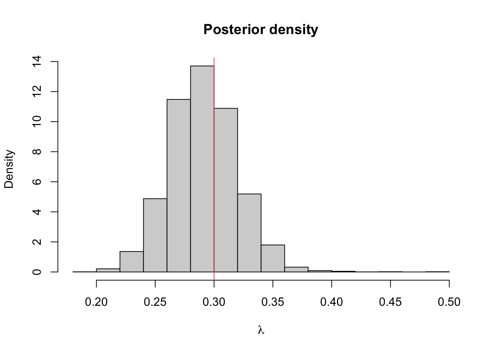
## [1] 0.3086762## 2.5% 97.5%
## 0.1933055 0.4555422Example 5.6 The time until lorry drivers react (in milliseconds) to an obstacle in the road is
y <- c(0.34, 0.47, 0.58, 0.27, 0.74, 0.44, 0.46, 0.65, 0.36, 0.55, 0.58, 0.55,
0.53, 0.56, 0.54, 0.61, 0.43, 0.52, 0.45, 0.49, 0.32, 0.33, 0.47, 0.58,
0.34, 0.60, 0.59, 0.43, 0.57, 0.34)
hist(y, main = "", xlab = "Reaction time (ms)")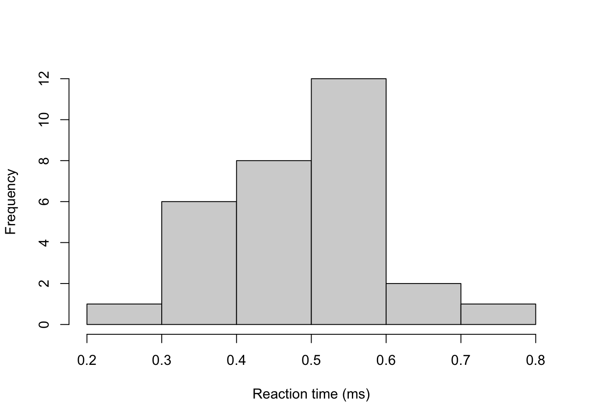
Assuming that for fixed \(\sigma^2 > 0\), \(Y_i \mid \mu \sim N(\mu, \sigma^2)\) are independent and identically distributed for \(i=1,...,n\), by Bayes’ theorem, the posterior distribution is
\[ \pi(\mu \mid \boldsymbol{y}, \sigma^2) \propto \pi(\boldsymbol{y} \mid \mu, \sigma^2) \pi(\mu). \] One of the issues here is that we have assigned a normal prior distribution to the population mean parameter \(\mu\). The advantage previously was that we could derive a posterior distribution with closed form. The disadvantage however is that the choice of prior distribution assigns some positive probability to impossible values of \(\mu\), i.e. reaction times less than zero.
Now we have a tool to sample from posterior distributions that don’t have a closed form. We can instead assign an exponential prior distribution, a distribution which only has non-negative support. Letting \(\mu \sim \textrm{Exp}(10)\) sets a vague prior distribution on \(\mu\). It can be shown that the posterior distribution (exercise) is therefore \[ \pi(\mu \mid \boldsymbol{y}, \sigma^2) \propto \exp\left\{-10\mu -\sum_{i=1}^{30}\frac{(y_i - \mu)^2}{\sigma^2}\right\} \]
We can use the Metropolis–Hastings algorithm to sample from this posterior distribution. But how should we propose new value of \(\mu\)? A common method is a Metropolis–Hastings Random Walk proposal distribution. The proposal distribution is symmetric and centered on \(\mu\). The two most common methods are \(\mu' \mid \mu \sim U[\mu - \varepsilon, \mu + \varepsilon]\) and \(\mu' \mid \mu \sim N(\mu, \tau^2)\). We choose the uniform proposal distribution, with \[ q(\mu' \mid \mu) = \frac{1}{2\varepsilon}. \]
The acceptance probability is therefore \[ p_\textrm{acc} = \min\left\{\frac{\exp\left\{-10\mu' -\sum_{i=1}^{30}\frac{(y_i - \mu')^2}{\sigma^2}\right\} }{\exp\left\{-10\mu -\sum_{i=1}^{30}\frac{(y_i - \mu)^2}{\sigma^2}\right\} }, 1\right\} \]
We can implement a sampler in R as follows:
#Set up elements for MCMC
set.seed(123) #to reproduce
n.iter <- 10000
mu.store <- numeric(n.iter)
#Initial values
mu <- 1
sigma <- 0.1 #known
for(i in 1:n.iter){
#Propose value for mu
mu.proposed <- runif(1, mu - 0.01, mu + 0.01)
if(mu.proposed > 0){ #If mu < 0 we can reject straight away
#Compute (log) acceptance probability
log.numerator <- -10*mu.proposed -
sum(y - mu.proposed)^2/(2*sigma^2)
log.denominator <- -10*mu - sum(y - mu)^2/(2*sigma^2)
log.p.acc <- log.numerator - log.denominator
u <- runif(1)
#Accept/Reject step
if(log(u) < log.p.acc){
mu <- mu.proposed
}
}
#Store mu at each iteration
mu.store[i] <- mu
}
plot(mu.store, type = 'l', xlab = "iteration",
ylab = expression(mu))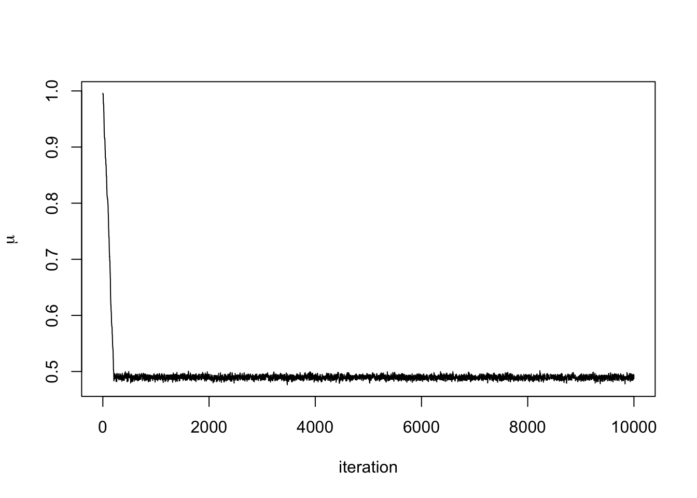
We can see that after about 300 iterations, the Markov chain has converged to its stationary distribution, the posterior distribution. We can see this more clearly by removing the first 300 iterations.
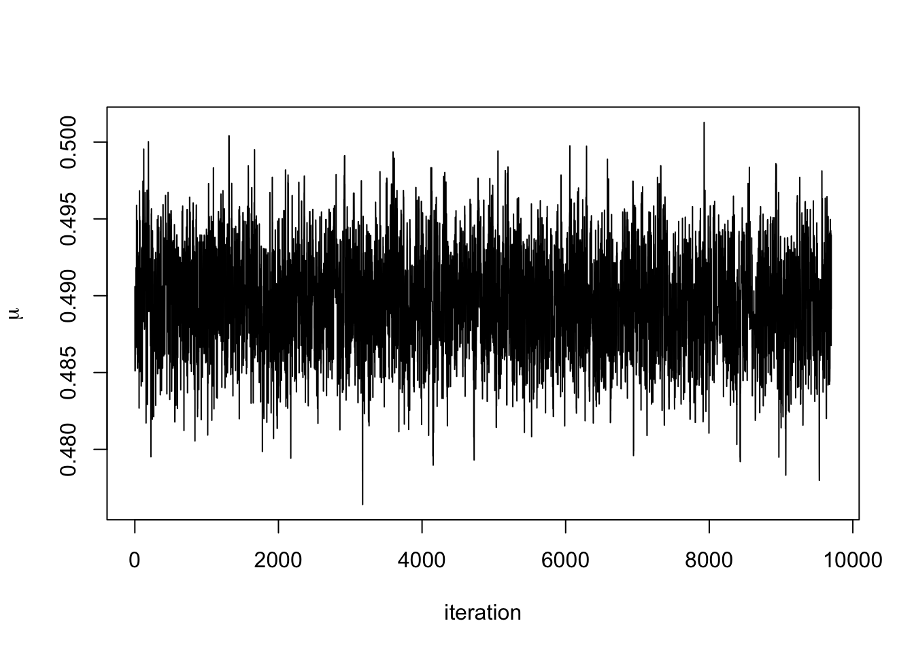
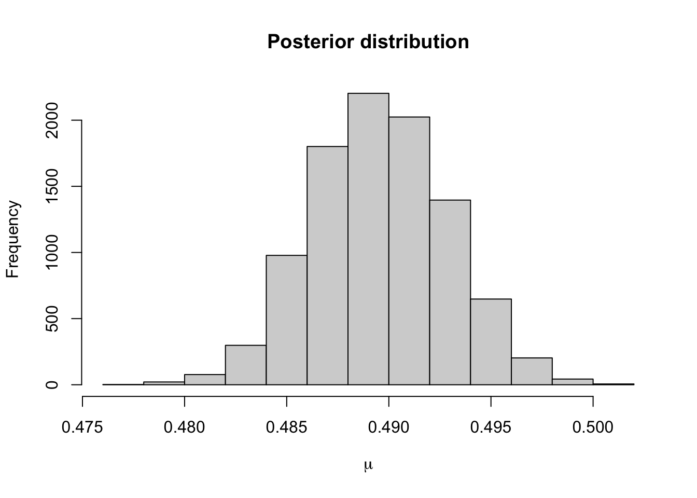
The 95% credible interval for \(\mu\) using this prior distribution is
## 2.5% 97.5%
## 0.4831480 0.4960669Using a normal prior distribution, it was
0.486 0.493It seems that the posterior distribution is very similar when using these two prior distributions. This is because the data are very informative.
Example 5.7 In Lab 3.9, we computed the MAP estimate for a parameter from the Pareto distribution. The density function of this distribution is \[ \pi(x \mid \beta) = \frac{\beta}{x^{\beta + 1}}, \quad x > 1. \] Placing a Gamma prior distribution on \(\beta\) such that \(\beta \sim \Gamma(a, b)\). The posterior distribution given the data \(\boldsymbol{y} = \{y_1, \ldots, y_N\}\) is \[ \pi(\beta \mid \boldsymbol{y}) \propto \frac{\beta^{N + a - 1}e^{-b\beta}}{\prod y_i^{\beta + 1}}. \] We can’t sample from this directly, so wee need to use a Metropolis–Hastings algorithm to generate samples from the posterior distribution. We will use a normal proposal distribution.
The acceptance probability is \[ p_{acc} = \min \left\{1, \frac{\beta'^{N + a - 1}e^{-b\beta'}}{\prod y_i^{\beta' + 1}}\frac{\prod y_i^{\beta + 1}}{\beta^{N + a - 1}e^{-b\beta}} \right\} \\ = \min \left\{1, \left(\frac{\beta'}{\beta}\right)^{N + a - 1}{\prod y_i^{\beta - \beta'}}\exp((\beta - \beta')b) \right\}. \] The MCMC algorithm will be
- Set an initial value \(\beta_0\) and set \(i =0\).
- Propose a new value \(\beta' \sim N(\beta_i, \sigma^2)\)
- Accept \(\beta'\) with probability \(p_{acc}\) and set \(\beta_{i+1}= \beta'\), otherwise reject and set \(\beta_{i+1}= \beta_i\).
- Repeat steps 2, 3, and 4 for \(i = 1, \ldots, n-1\).
We fix \(b=0.01\) and use the data
x <- c(1.019844, 1.043574, 1.360953, 1.049228, 1.491926, 1.192943, 1.323738, 1.262572, 2.034768, 1.451654)to code up our algorithm.
#Function that evaluates Pareto loglikelihood
log.likelihood <- function(x, beta){
log.value <- length(x)*log(beta) - (beta + 1)*sum(log(x))
return(log.value)
}
# MCMC Sampler ------------------------------------------------------------
#Initialise Values
x <- c(1.019844, 1.043574, 1.360953, 1.049228, 1.491926, 1.192943, 1.323738, 1.262572, 2.034768, 1.451654)
n.iter <- 10000 #number of iterations
beta.current <- 2 #initial value for beta
beta.store <- numeric(n.iter) #empty vecotr to store beta at each iteration
#Run MCMC For Loop
for(i in 1:n.iter){
#Propose prop value for beta
beta.prop <- rnorm(1, beta.current, 0.5)
#Compute current and prop loglikelihood
loglike.prop <- log.likelihood(x, beta.prop)
loglike.current <- log.likelihood(x, beta.current)
#Compute Log acceptance probability
log.p.acc <- loglike.prop - loglike.current +
dgamma(beta.prop, 1, 0.01, log = TRUE) - dgamma(beta.current, 1, 0.01, log = TRUE)
#Accept/Reject
u <- runif(1)
if(log(u) < log.p.acc){
beta.current <- beta.prop
}
#Store Current Value
beta.store[i] <- beta.current
}
#Plot trace plots
plot(beta.store, type = 'l')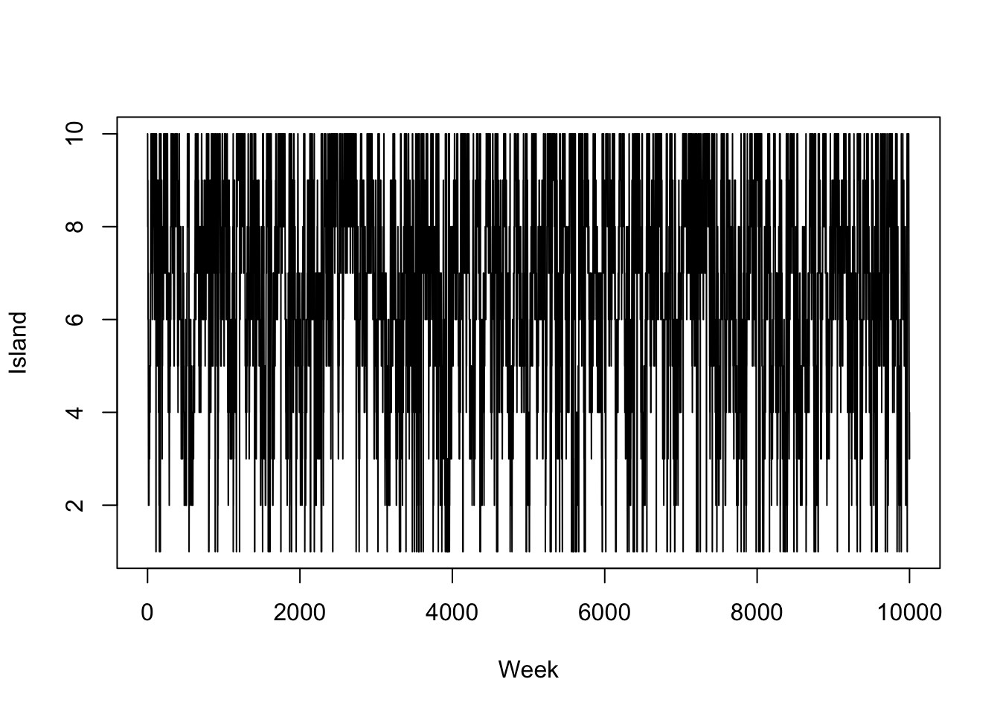
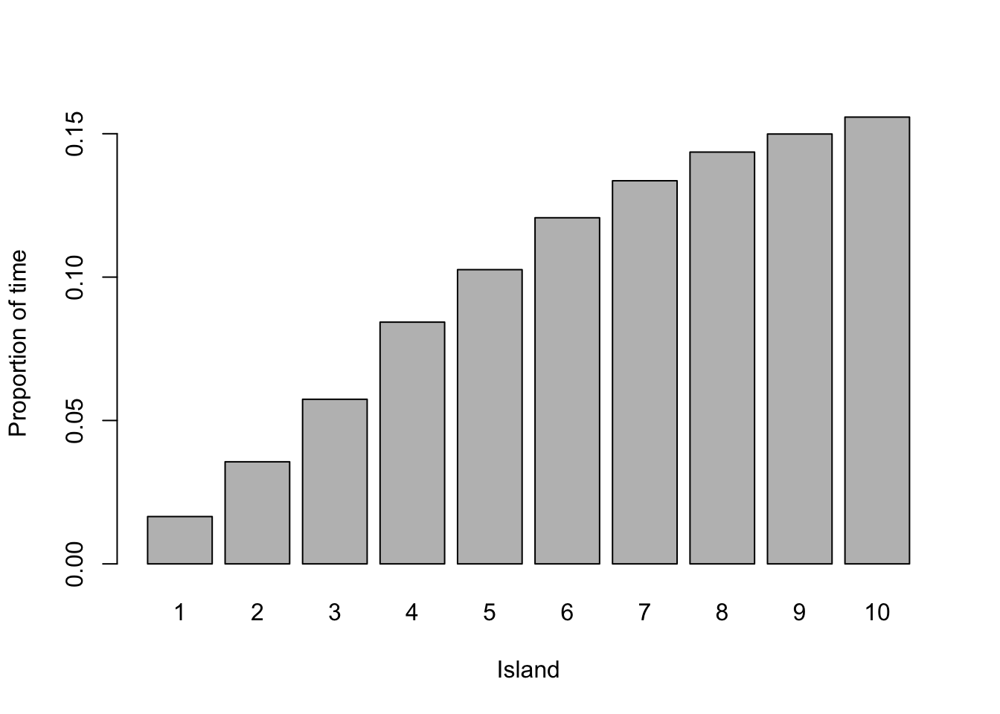
## 2.5% 97.5%
## 2.102268 7.0278265.3 Gibbs Sampler
When we can sample directly from full conditional distributions, we can use a Gibbs sampler. Suppose we have a distribution with parameters \(\{\theta_1, \ldots, \theta_N\}\), a Gibbs sampler works as follows:
Set initial values \(\{\theta_1^{(0)}, \ldots, \theta_N^{(0)}\}\)
Set \(i = 1\).
Draw a value for \(\theta_1^{(i)}\) from \(\pi(\theta_1 \mid \theta_2^{(i-1)}, \ldots, \theta_N^{(i-1)})\).
Draw a value for \(\theta_2^{(i)}\) from \(\pi(\theta_2 \mid \theta_1^{(i)}, \theta_3^{(i-1)}, \ldots, \theta_N^{(i-1)})\).
\(\vdots\)
Draw a value for \(\theta_N^{(i)}\) from \(\pi(\theta_N \mid \theta_1^{(i)}, \theta_2^{(i)}, \ldots, \theta_{N-1}^{(i)})\).
Repeat step 2 for \(i = 2, \ldots M\).
In code, this might look like
M #number of iterations
N #number of parameters
theta.store <- matrix(NA, N, M)
theta <- numeric(N)
for(j in 1:M){
for(j in 1:N){
theta[i] <- #sample from conditional with theta[-i]
}
theta.store[, j] <- theta.current #store current values
}Example 5.8 In Example 3.5, we had a hierarchical model with
\[\begin{align*}
\boldsymbol{y} \mid \lambda &\sim \hbox{Exp}(\lambda) & \textrm{(likelihood)} \\
\lambda \mid \gamma &\sim \hbox{Exp}(\gamma) & \textrm{(prior distribution)} \\
\gamma \mid \nu &\sim \hbox{Exp}(\nu) & \textrm{(hyperprior distribution)} \\
\end{align*}\].
To derive the full conditional distributions, we only consider the terms in the posterior distributions that depends on the parameters we are interested in. The full conditional distribution for \(\lambda\) is
\[
\pi(\lambda \mid \boldsymbol{y}, \,\gamma) \propto \lambda^{10}e^{-\lambda(95 + \gamma)}.
\]
This is unchanged and shows that \(\lambda \mid \boldsymbol{y}, \gamma \sim \textrm{Gamma}(11, 95 + \gamma)\). The full conditional distribution for \(\gamma\) is
\[
\pi(\gamma \mid \boldsymbol{y}, \,\lambda) \propto e^{-\nu\gamma}.
\]
Therefore the full conditional distribution of \(\gamma\) is \(\gamma \mid \boldsymbol{y}, \,\lambda \sim \hbox{Exp}(\lambda + \nu)\).
We can set up a Metropolis–Hastings algorithm using Gibbs samplers to generate samples for \(\lambda\) and \(\gamma\).
Set initial values \(\{\lambda^{(0)}, \gamma^{(0)}\}\)
Set \(i = 1\).
Draw a value for \(\lambda^{(i)} \mid \boldsymbol{y}, \gamma^{(i-1)} \sim \textrm{Gamma}(10, 95 + \gamma^{(i-1)})\)
Draw a value for \(\gamma^{(i)} \mid \boldsymbol{y}, \,\lambda^{(i)} \sim \hbox{Exp}(\lambda^{(i)} + \nu)\).
Repeat steps 3 and 4 for \(i = 2, \ldots M\).
We can now code this up and run the algorithm.
# Set Up MCMC Algorithm ---------------------------------------------------
n.iter <- 10000
lambda.store <- numeric(n.iter) #Store value of Markov chain at end of every iteration
gamma.store <- numeric(n.iter) #Store value of Markov chain at end of every iteration
# Run MCMC Algorithm ------------------------------------------------------
for(i in 2:n.iter){
#Store current value of Markov Chain
lambda.store[i] <- rgamma(1, 10, 95 + gamma.store[i-1])
gamma.store[i] <- rexp(1, 0.01 + lambda.store[i])
}
#Plot trace plot (Markov chain values)
plot(lambda.store, type = 'l', xlab = "iteration", ylab = expression(lambda))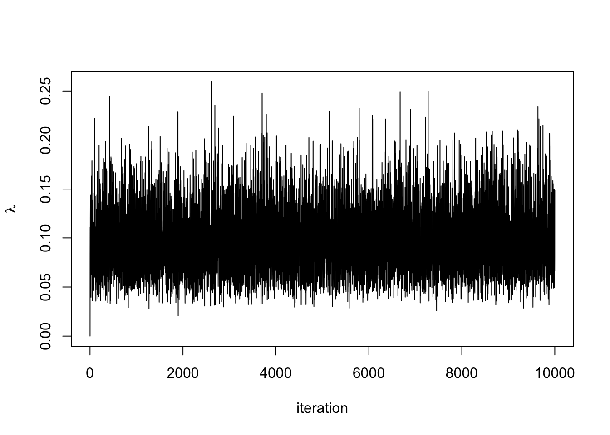

#Plot posterior density
hist(lambda.store, prob = TRUE, xlab = expression(lambda), main = "Posterior density")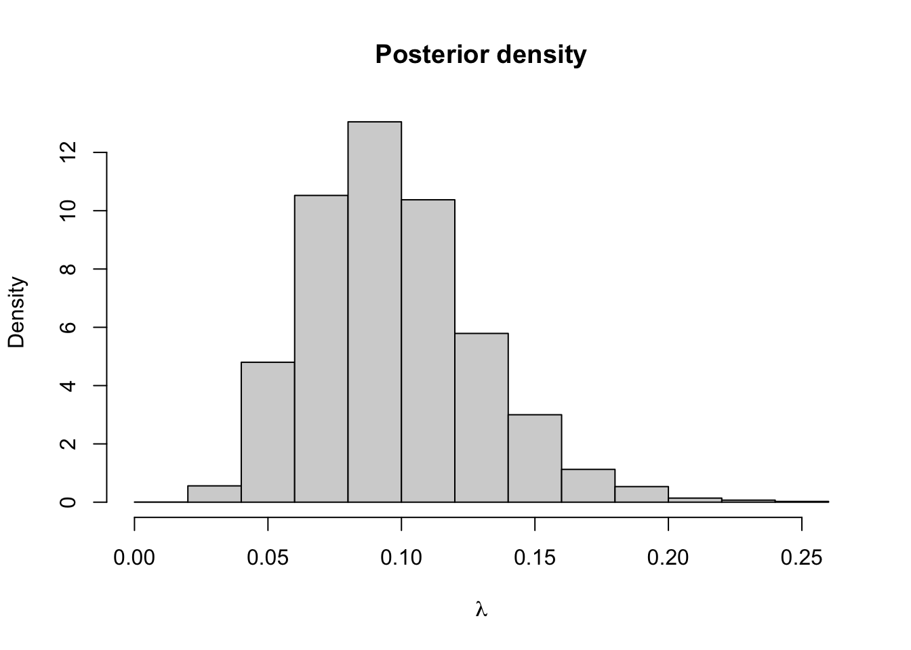
## [1] 0.09561264## 2.5% 97.5%
## 0.0454177 0.1658069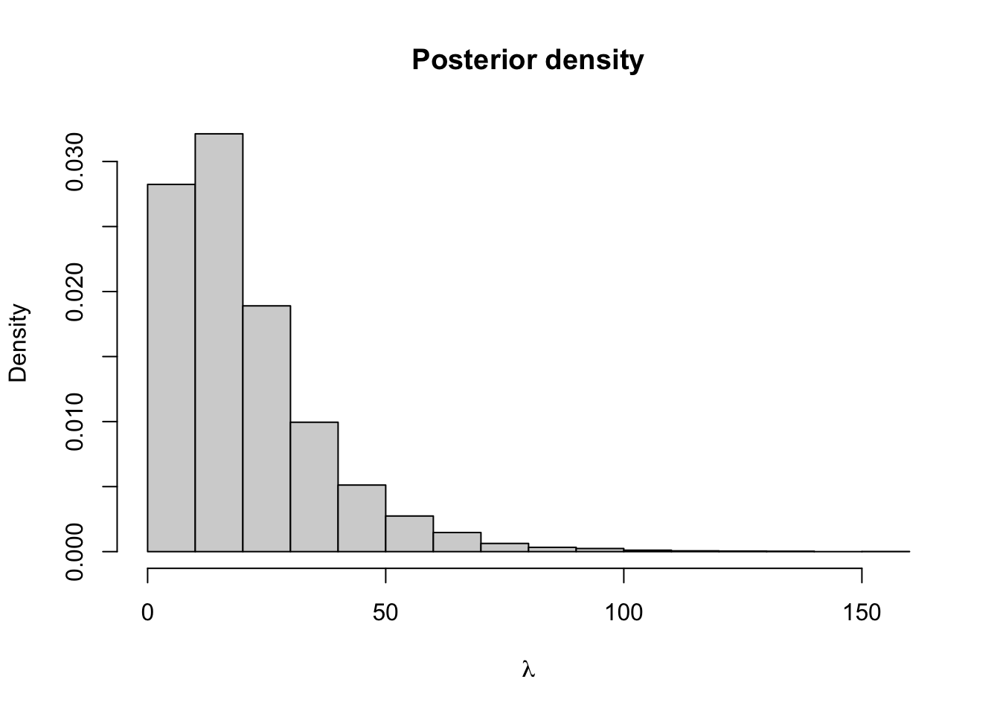
## [1] 10.4679## 2.5% 97.5%
## 0.2437085 40.4251992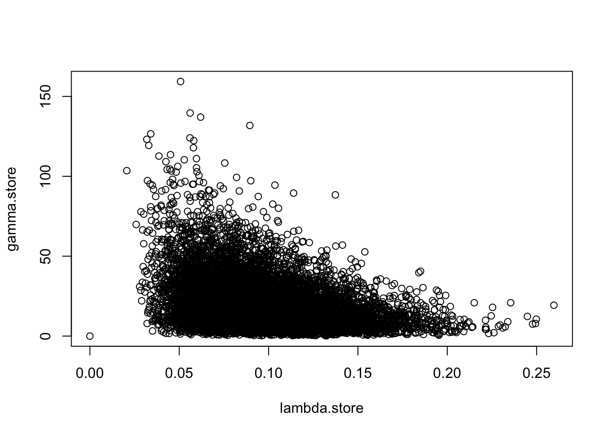
5.4 Metropolis-within-Gibbs
Now we have both the Metropolis–Hastings algorithm and Gibbs sampler, we can combine them to create a generic MCMC algorithm for essentially any posterior distribution with any number of parameters. To create our MCMC algorithm, we update any parameters where the full conditional distribution has closed form with a Gibbs sampler. For parameters where the full conditional distribution does not have a closed form, we use a Metropolis–Hastings algorithm to update the parameters.
Example 5.9 Suppose \(X_1, \ldots, X_N \sim \hbox{Weibull}(\beta, \theta)\), where \[ \pi(x \mid\beta,\theta) = \frac{\beta}{\theta}x^{\beta - 1}\exp\left(-\frac{x^\beta}{\theta}\right), \qquad x, \beta, \theta > 0. \] We use an Exponential prior distribution with rate \(\lambda\) on \(\beta\) and an inverse gamma prior distribution on \(\theta\) such that \[ \pi(\theta) = \frac{1}{\theta^{a - 1}}\exp\left(-\frac{b}{\theta}\right). \] The posterior distribution is therefore \[\begin{align*} \pi(\beta, \theta \mid \boldsymbol{x}) &\propto \pi(\boldsymbol{x} \mid \beta, \theta)\pi(\beta)\pi(\theta) \\ &\propto \frac{\beta^N}{\theta^N}\prod x_i^{\beta - 1}\exp\left(-\frac{1}{\theta}\sum x_i^\beta\right) \\ &\times\exp(-\lambda\beta) \frac{1}{\theta^{a - 1}}\exp\left(-\frac{b}{\theta}\right) \end{align*}\]
The full conditional distributions are therefore \[\begin{align*} \pi(\beta \mid \theta, \boldsymbol{x}) &\propto\beta^N\prod x_i^{\beta - 1}\exp\left(-\frac{1}{\theta}\sum x_i^\beta\right)\exp(-\lambda\beta) \\ \pi(\theta \mid \beta, \boldsymbol{x}) & \frac{1}{\theta^{N + a -1}}\exp\left(-\frac{1}{\theta}(b + \sum x_i^\beta)\right) \end{align*}\]
There is no closed form for the full conditional distribution for \(\beta\), so we will need to use a Metropolis–Hastings algorithm to update this parameter in our MCMC algorithm. The full conditional distribution for \(\theta\) is closed as it is proportional to an inverse Gamma distribution with shape \(N + a\) and scale \(b + \sum x_i^\beta\). We can use a Gibbs sampler to update value for \(\theta\). A suitable MCMC algorithm will look like
- Set initial values for \(\beta^{(0)}\) and \(\theta^{(0)}\) and \(i = 1\).
- Propose a new value for \(\beta\), \(\beta' \sim U[\beta^{(i-1)} + \varepsilon, \beta^{(i-1)} - \varepsilon]\)
- Accept \(\beta' = \beta^{(i)}\) with probability \[ p_{\textrm{acc}} = \min\left\{\frac{\pi(\beta', \theta^{(i-1)} \mid \boldsymbol{x})}{\pi(\beta, \theta^{(i-1)} \mid \boldsymbol{x})}\frac{q(\beta^{(i-1)} \mid \beta')}{q(\beta' \mid \beta^{(i-1)})} , 1\right\} \] Otherwise reject \(\beta'\) and set \(\beta^{(i)} = \beta^{(i-1)}\).
- Sample \(\theta^{(i)} \sim \hbox{inv}-\Gamma(N + a,\, b + \sum x_i^{\beta^{(i)}})\).
- Repeat steps 2-4.
The acceptance probability in step 3 is the ratio of the full conditional distributions for \(\beta\).
5.5 MCMC Diagnostics
When running an MCMC algorithm, it is always important to check that the Markov chain has converged and is mixing well. For our purposes, mixing well means the chain is exploring the space of possible values of \(\theta\) effectively and effectively and not getting stuck on the same value for a long time.
A key way of doing this is by looking at the trace plot, which is a time series of the posterior samples simulated by the algorithm. The trace plot should look like it has converged to the stationary distribution and exploring the stationary distribution efficiently. What it shouldn’t look like is a long series of small steps, or being stuck in one spot for a long time. There are two definitions that help us isolate an efficient Markov chain.
Definition 5.11 The burn-in period is the number of iterations the Markov chain takes to reach the stationary distribution.
Definition 5.12 The thinning parameter is the period of iterations of the Markov chain that are stored.
Example 5.10 In Example 5.6, we saw a Markov chain that mixes well. We took the burn-in period to be 3,000 iterations, which was how long it took to for the chain to converge. Although the posterior distribution is invariant to the choice of the proposal distribution, it still has a large effect of the efficiency of the algorithm and how well the chain mixes. The ideal trace plot looks like white noise, or a hairy caterpillar.
In a Metropolis–Hastings random walk algorithm, the proposal distribution often has a large impact on how well the Markov chain mixes. The variance, or step size, of the proposal distribution can be tuned to ensure the chain mixes well.
The following two examples show poorly mixing Markov chains. The first is where the step size is too big and the chain frequently gets stuck for several hundred iterations.
set.seed(123) #to reproduce
n.iter <- 10000
mu.store <- numeric(n.iter)
#Initial values
mu <- 1
sigma <- 0.1 #known
for(i in 1:n.iter){
#Propose value for mu
mu.proposed <- runif(1, mu - 0.1, mu + 0.1) #Step size too big
if(mu.proposed > 0){ #If mu < 0 we can reject straight away
#Compute (log) acceptance probability
log.numerator <- -0.01*mu.proposed -
sum(y - mu.proposed)^2/(2*sigma^2)
log.denominator <- -0.01*mu - sum(y - mu)^2/(2*sigma^2)
log.p.acc <- log.numerator - log.denominator
u <- runif(1)
#Accept/Reject step
if(log(u) < log.p.acc){
mu <- mu.proposed
}
}
#Store mu at each iteration
mu.store[i] <- mu
}
plot(mu.store[-c(1:3000)], type = 'l', xlab = "iteration",
ylab = expression(mu))
The next is where the step size is too small. It takes a long time for the chain to converge (~50% of the run time). When the chain does converge, it is inefficient at exploring the space.
set.seed(123) #to reproduce
n.iter <- 10000
mu.store <- numeric(n.iter)
#Initial values
mu <- 1
sigma <- 0.1 #known
for(i in 1:n.iter){
#Propose value for mu
mu.proposed <- runif(1, mu - 0.0005, mu + 0.0005) #Step size too small
if(mu.proposed > 0){ #If mu < 0 we can reject straight away
#Compute (log) acceptance probability
log.numerator <- -0.01*mu.proposed -
sum(y - mu.proposed)^2/(2*sigma^2)
log.denominator <- -0.01*mu - sum(y - mu)^2/(2*sigma^2)
log.p.acc <- log.numerator - log.denominator
u <- runif(1)
#Accept/Reject step
if(log(u) < log.p.acc){
mu <- mu.proposed
}
}
#Store mu at each iteration
mu.store[i] <- mu
}
par(mfrow = c(1, 2))
plot(mu.store, type = 'l', xlab = "iteration", ylab = expression(mu))
plot(mu.store[-c(1:5000)], type = 'l', xlab = "iteration",
ylab = expression(mu))
The final diagnostic issue we are going to think about is the curse of dimensionality. In general, the more parameters we try and update, the less likely we are to accept them. This makes exploring the proposal distribution hard if we are trying to update lots of parameters simultaneously. We can see this if we consider a hypersphere :::{.example} Suppose we have a density function that is uniformly distributed over the area of a sphere in \(N\) dimensions with radius \(r\). The sphere has volume \[ V = \frac{\pi^{N/2}}{\Gamma(\frac{N}{2} + 1)}r^N. \] Now consider a smaller sphere inside of our original sphere. This still has dimension \(N\) but has radius \(r_1 < r\). This small sphere has volume \[ V_1 = \frac{\pi^{N/2}}{\Gamma(\frac{N}{2} + 1)}r_1^N. \] The difference between these two volumes is \[ V - V_1 = \frac{\pi^{N/2}}{\Gamma(\frac{N}{2} + 1)}(r^N - r_1^N). \] For large \(N\), even when \(r - r_1\) is small, \((r^N - r_1^N)\) is large. This means that lots of the probability mass is concentrated away from the mode into the outer shell of the sphere.
The hypersphere example shows that in large dimensions we need our Markov chain to spend lots of time away from the posterior mode and in the tails of the distribution, but this is where the proposal distribution has lowest mass. We can avoid this by updating each parameter individually, but this means we need to use the full conditional distributions, which have highest mass near the mode. This ‘curse’ makes MCMC algorithms inefficient for large dimensions.
5.6 Beyond MCMC
MCMC is not the only method available to generate samples from the posterior distribution. MCMC is often slow and inefficient. Much of the work in computational statistics research is about developing fast and efficient methods for sampling from posterior distributions. We are going to look at another method, called approximate Bayesian computation, in the next chapter. Two other methods, beyound the scope of this module, are Sequential Monte Carlo and Hamiltonian Monte Carlo.
Sequential Monte Carlo (SMC) methods for Bayesian inference aim to estimate the posterior distribution of a state space model recursively based on the observed data. Initially, a set of particles representing possible states is sampled from the prior distribution. Then particles are propagated forward using the system dynamics and updated according to their likelihood given the observed data. This update step involves reweighting particles based on how well they explain the observed data. To ensure that the particle set accurately represents the posterior distribution, resampling is performed, where particles with higher weights are more likely to be retained. By iteratively repeating these steps, SMC effectively tracks the evolution of the posterior distribution over time, providing a flexible and computationally efficient framework for Bayesian inference in dynamic systems.
Hamiltonian Monte Carlo (HMC) is a sophisticated Markov chain Monte Carlo (MCMC) method for sampling from complex, high-dimensional target distributions, commonly used in Bayesian inference. Unlike traditional MCMC methods, which rely on random walk proposals, HMC employs Hamiltonian dynamics to guide the exploration of the state space. By introducing auxiliary momentum variables, HMC constructs a joint distribution over the original target variables and the momentum variables. This augmented space enables the use of Hamiltonian dynamics, which can efficiently explore the target distribution by simulating the evolution of the system’s energy function. The key idea is to use the gradient of the target distribution’s log-probability to determine the momentum dynamics, leading to more effective proposals that can traverse the state space more efficiently. HMC samples are obtained by simulating Hamiltonian dynamics over a trajectory and then accepting or rejecting the proposed states based on Metropolis–Hastings criteria. Overall, HMC offers significant improvements in exploration efficiency compared to traditional MCMC methods, particularly in high-dimensional spaces, making it a powerful tool for Bayesian inference.
5.7 Lab
Exercise 5.1 Consider the Langevin Markov chain with potential \(V(x) = \exp(-\lvert x \rvert^3)\) in dimension \(d=1\). Simulate \(10,000\) iterates of the Markov chain for different step sizes \(h\) and compare the histogram to a plot of the target density \(\pi(x) \propto \exp(-V(x))\). Also experiment with different choices for \(V\).
Exercise 5.2 You observe the following draws from a Binomial distribution with 25 trials and probability of success \(p\).
y <- c(20, 16, 20, 17, 18, 19, 19, 18, 21, 20, 19, 22, 23, 19, 20, 19, 21, 20, 25, 15)Use a normal prior distribution with mean 0.5 and variance \(0.1^2\). Write a Metropolis–Hastings Random Walk algorithm to obtain samples from the posterior distribution (you can use R’s built in function for the likelihood function and prior distribution, but if you don’t take logs you will run into small number errors).
Exercise 5.3 In a medical trial, to investigate the proportion \(p\) of the population who have a particular disease a random sample of 20 individuals is taken. Ten of these are subject to a diagnostic test (Test A) which detects the disease when it is present with 100% certainty. The remaining 10 are given a test (test B) which only detects the disease with probability 0.8 when it is present. Neither test can give a false positive result. before collecting the data your prior belief about \(p\) is represented by a U(0,1) distribution. Suppose that, for Test A, 5 out of 10 test positive while for test B, 3 out of 10 test positive. Use an MCMC algorithm to investigate the posterior density of \(p\) and estimate its posterior mean and variance.
Exercise 5.4 Code up an MCMC algorithm for Example 3.5 using Gibbs samplers.
Exercise 5.5 The density function for the inverse-gamma distribution is \[ \pi(x\mid \alpha, \beta) = \frac{\beta^\alpha}{\Gamma(\alpha)}x^{\alpha - 1}e^{-\beta/x} \] Using independent Gamma prior distributions on the model parameters, \(\alpha \sim \Gamma(a, b)\) and \(\beta \sim Gamma(c, d)\), write down the posterior distribution for the model parameters. Only one will have a closed form.
Develop a code an MCMC algorithm to sample from the posterior distribution by alternating between sampling \(\alpha\) and then \(\beta\).
Simulate some data from the inverse-gamma distribution and see if you can recover the parameters used to simulate the data. Is there any correlation between the samples for \(\alpha\) and \(\beta\).